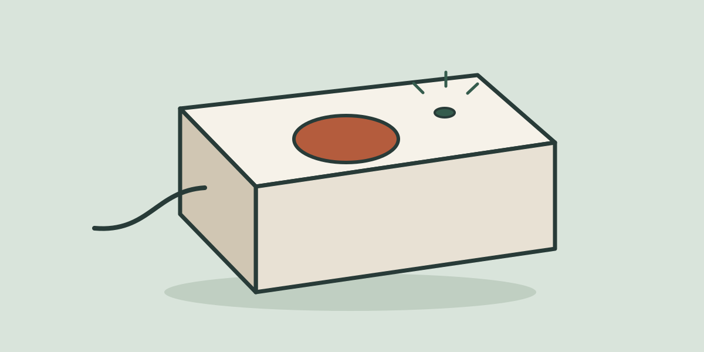

Give it one job
A timer does not need an app. Pick one useful thing and get that working first.
Spare Hour
Small electronics projects for the space between classes, starting with the stuff on your desk.
Find your first buildA timer does not need an app. Pick one useful thing and get that working first.
Start with the board and parts you already have. The first version can stay on a breadboard.
Write down the pin you changed and the mistake you fixed. Future you will want that detail.
Checking the time on a phone can turn into checking everything else. This project idea uses a button to start a study timer and an LED to signal when the session ends.

Test the button and the light separately. It is easier to find a problem when only one thing has changed.
Take a photo of the wiring and save the working code. Add one sentence about what you would change next.
Clear a little desk space. Start with one button, one light, and a reason to make them work.
Start with the desk timer